1. ¿Qué es Factoría de Agentes?
Imagina que quieres que alguien te construya un programa (por ejemplo, un juego, una web o una aplicación), pero en lugar de contratar a programadores, se lo pides a unos ayudantes automáticos que trabajan solos, en cadena, siguiendo tus instrucciones.
Eso es lo que hace esta aplicación:
- Tú describes lo que quieres (el objetivo, qué debe hacer el programa, qué debe cumplir).
- Tú decides el orden de las tareas (quién hace qué y cuándo). A ese orden se le llama flujo de trabajo.
- La aplicación lanza a los ayudantes, que van programando, revisando su propio trabajo y documentando el resultado.
- Tú lo ves todo en tiempo real: en qué paso está, qué está haciendo y qué archivos va creando.
2. Entrar en la aplicación
2.1 Abrir la aplicación
- Abre tu navegador (Chrome, Firefox, Edge…).
- Escribe la dirección en la barra superior:
http://localhost:8088(en tu instalación puede ser otra). - Pulsa Intro.
Verás una pantalla oscura con el texto “Factoría de Agentes” y dos pestañas: Entrar y Registrarse.
2.2 Crear tu cuenta (solo la primera vez)
- Pulsa la pestaña Registrarse.
- Rellena Nombre, Email y Contraseña (mínimo 8 caracteres).
- Pulsa Crear cuenta. Entrarás directamente con la sesión iniciada.
demo@factoria.dev con contraseña demo12345.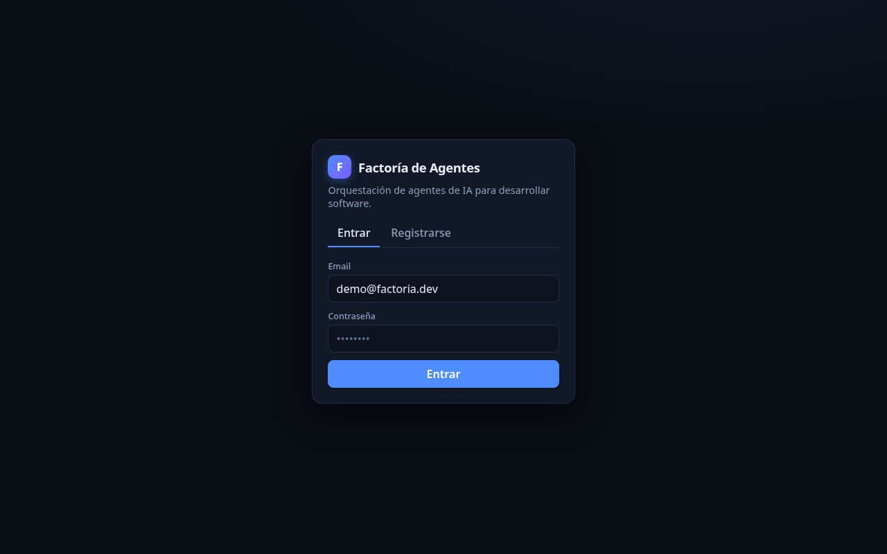
2.3 Entrar si ya tienes cuenta
- En la pestaña Entrar, escribe tu Email y Contraseña.
- Pulsa Entrar.
3. Conocer la pantalla y el menú
A la izquierda tienes una barra lateral (el menú). De arriba abajo:
| Elemento | Para qué sirve |
|---|---|
| Proyectos | Tus programas. Es lo primero que verás al entrar. |
| Flujos de trabajo | Los “planos” que indican el orden de las tareas. |
| Subagentes | Ayudantes especializados (revisor, explorador, escritor de tests…). |
| Proveedores y modelos | Los servicios de IA que usan los ayudantes. |
| ES · English | Cambia el idioma de los menús. |
| Tu nombre y email | Datos de tu sesión. |
| Salir | Cierra tu sesión. |
El botón « (arriba a la izquierda) oculta el menú para aprovechar toda la pantalla; cuando está oculto aparece un botón » para recuperarlo.
4. Paso previo: dar de alta los “ayudantes”
Antes de crear proyectos hay que decirle a la aplicación qué servicios de inteligencia artificial puede usar. Se hace una sola vez.
4.1 Qué es un “proveedor” y un “modelo”
- Proveedor: la empresa o servicio de IA (Anthropic, OpenAI, NaN…).
- Modelo: la “versión” concreta del ayudante (Claude Sonnet, DeepSeek…).
4.2 Dar de alta un proveedor
- En el menú, pulsa Proveedores y modelos.
- En el panel Proveedores rellena Nombre (p. ej. Anthropic) y API key (la clave secreta que te da el proveedor, tipo
sk-…). - Pulsa Añadir proveedor.
4.3 Dar de alta un modelo
- En el panel Modelos elige el Proveedor.
- Rellena ID del modelo (nombre técnico, p. ej.
anthropic/claude-sonnet-4-6), Nombre visible y marca las Capacidades. - Pulsa Añadir modelo.
Capacidades
| Capacidad | Qué significa |
|---|---|
code | Escribe código. |
reasoning | Razona y resuelve problemas. |
toolUse | Usa herramientas (leer/escribir archivos, etc.). |
structuredOutput | Responde de forma ordenada (para decisiones automáticas). |
longContext | Maneja textos largos. |
vision | Entiende imágenes. |
embeddings / rerank | Permiten buscar dentro de tus documentos (RAG). |
imageGeneration | Crea imágenes (bocetos). |
code y reasoning. Si subirás documentos, añade uno con embeddings y otro con rerank.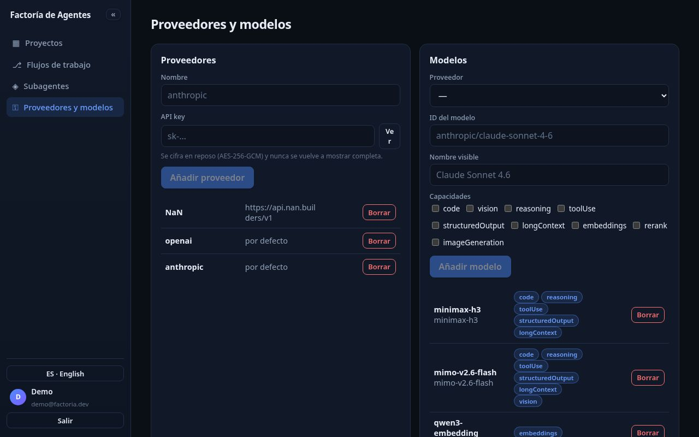
4.4 Subagentes (ayudantes especializados) — opcional
- En el menú, pulsa Subagentes.
- Pulsa Cargar plantillas (12) para tener una docena de ayudantes especializados listos.
- Puedes ver cómo quedaría cada uno con Ver fichero, o crear el tuyo en Nuevo subagente.
No es obligatorio, pero usar el documentador o el revisor mejora los resultados.
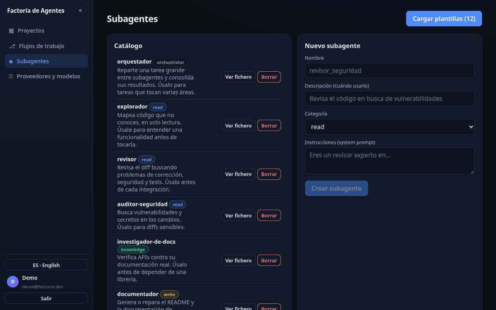
5. Crear un flujo de trabajo
El flujo es el “plano” del desarrollo: cajas (tareas) conectadas por flechas que indican el orden. Por ejemplo: programar → revisar → documentar.
5.1 Crear un flujo desde una plantilla (recomendado)
- En el menú, pulsa Flujos de trabajo.
- En la zona Plantillas verás varios planos ya hechos (p. ej. “Bucle de revisión estricta”).
- Pulsa Usar plantilla. Se abre el flujo listo para ajustar.
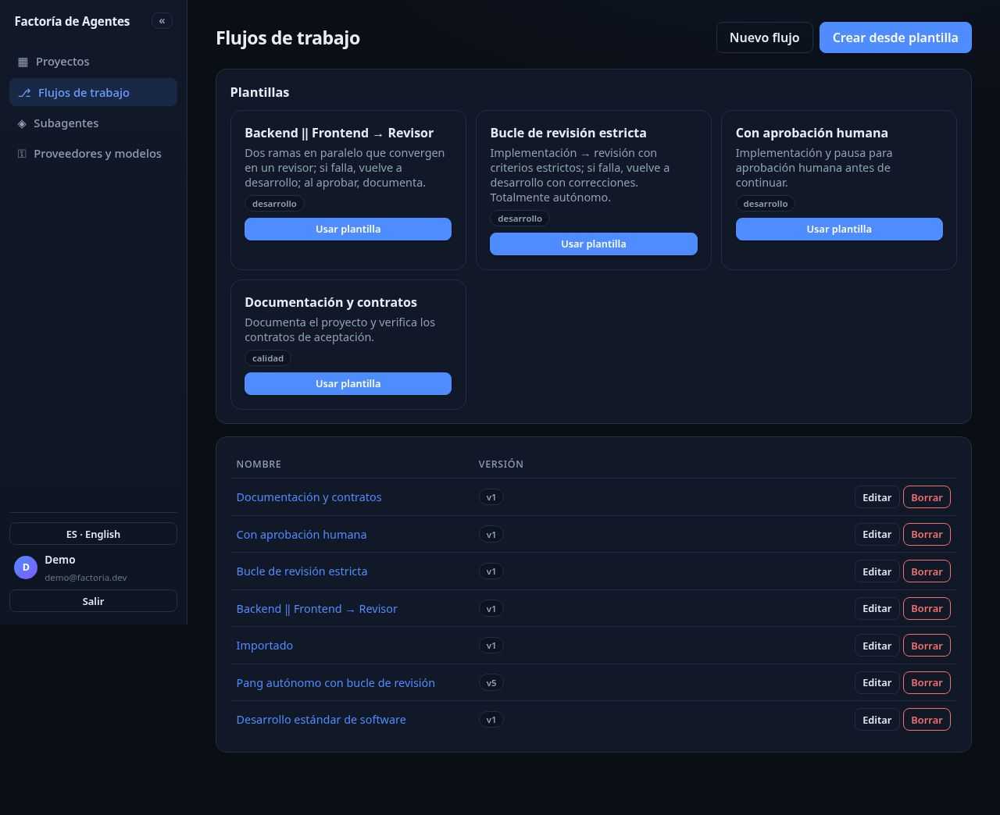
5.2 Crear un flujo desde cero
- Pulsa Nuevo flujo.
- Añade tareas desde la paleta de nodos (izquierda).
- Haz clic en una caja y configura en el panel Configuración: Nombre, Tipo, Descripción, Resultado esperado, Directorio de trabajo, Subagente, Modelo y Join.
- Conecta cajas arrastrando desde el punto derecho de una hasta el punto izquierdo de otra. La flecha puede ser éxito o fallo.
- Pulsa Guardar.
Tipos de caja más útiles
| Caja | Para qué sirve |
|---|---|
| Tarea | Un ayudante hace un trabajo (programar, crear un archivo…). |
| Revisor | Comprueba el trabajo y decide si está bien. |
| Aprobación | El desarrollo se pausa hasta que tú apruebes. |
| Contratos | Comprueba que se cumplen tus criterios de aceptación. |
| Bucle / Condición | Repite o decide caminos. |
| Nota (✎) | Una nota para ti; no ejecuta nada. |
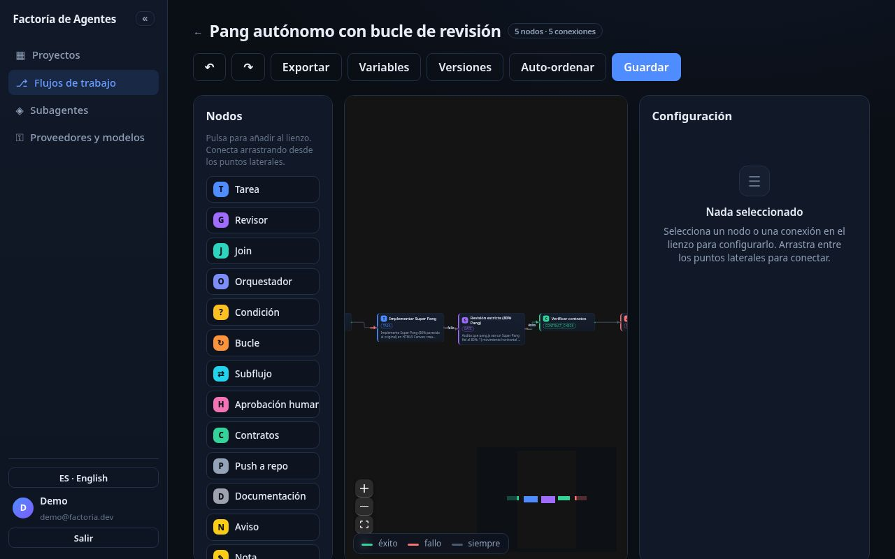
5.3 Herramientas del editor
- Versiones: “fotos” del flujo; puedes Restaurar una anterior.
- Variables: valores reutilizables; se usan como
{{ vars.nombre }}. - Probar nodo: ejecuta solo ese paso y muestra el resultado, sin lanzar todo.
- Exportar / Importar JSON: guardar y recuperar flujos en un archivo.
6. Crear un proyecto
Un proyecto es el programa que quieres construir.
- En el menú, pulsa Proyectos.
- Pulsa + Nuevo proyecto.
- Rellena:
- Nombre (p. ej. Mi juego).
- Nombre del programa (p. ej. JuegoPang).
- Objetivo: qué quieres conseguir, en tus palabras.
- Flujo de trabajo: el que creaste.
- Pulsa Crear proyecto. Entras en su ficha.
draft = borrador, completed = completado…).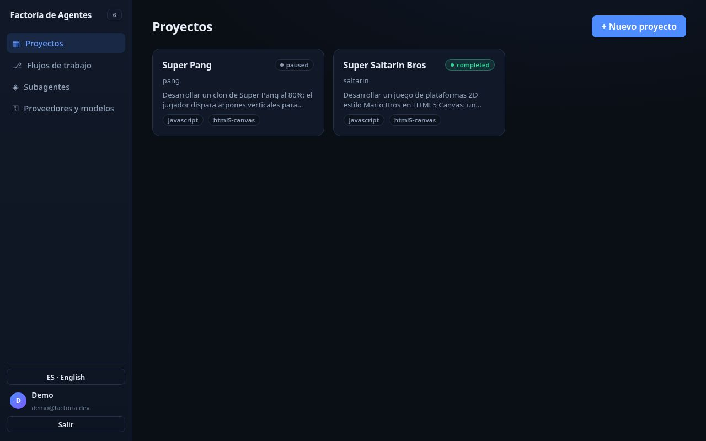
Para borrar un proyecto: en la lista de Proyectos, usa la opción de borrar de su tarjeta.
7. Completar la definición del proyecto
Al abrir un proyecto verás pestañas arriba. Vamos una por una.
7.1 General
- Objetivo y Descripción: afina lo que quieres.
- Stack: tecnologías con las que se construirá (p. ej.
javascript). Si no lo sabes, déjalo vacío. - Flujo de trabajo: cambia el flujo asignado.
- Modelo del asistente, Modelo de embeddings (RAG) y Modelo de rerank.
- Guardar cambios.
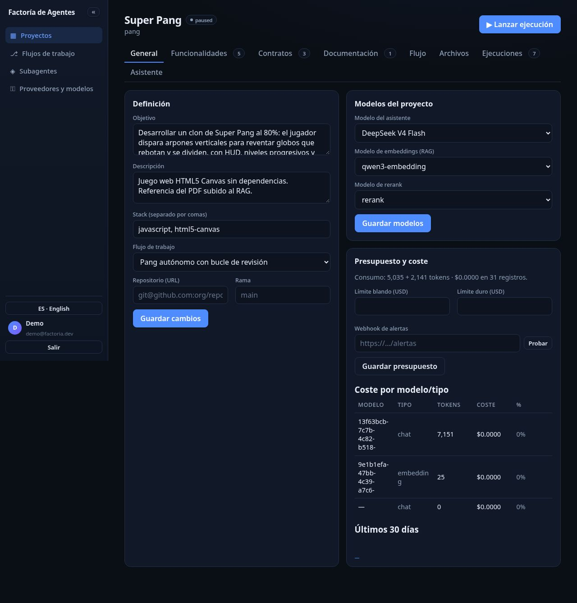
7.2 Funcionalidades
- Escribe una funcionalidad (p. ej. “El personaje salta con la barra espaciadora”).
- Pulsa Añadir. Repite para cada una.
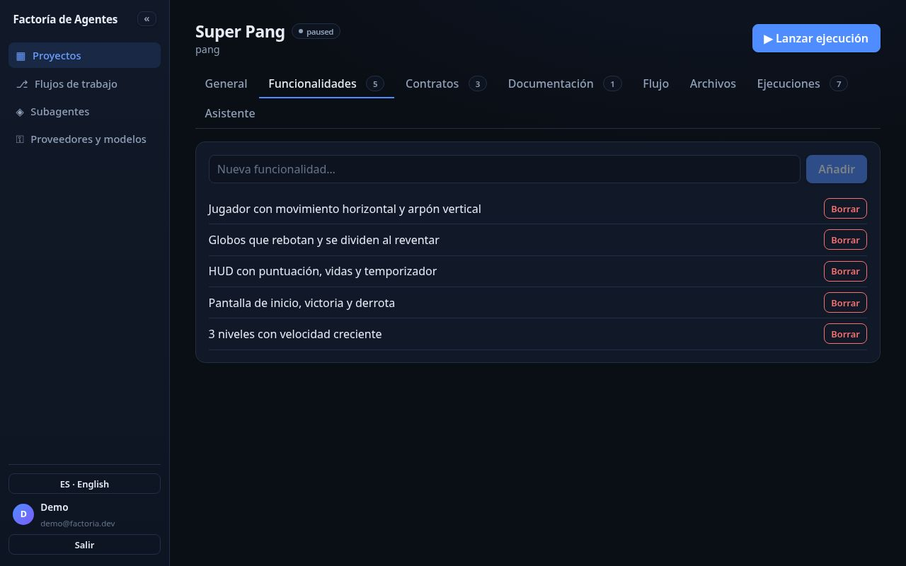
7.3 Contratos (criterios de aceptación)
Son las condiciones que deben cumplirse para dar el proyecto por terminado.
- Rellena Título, Verificación y Criterio de aceptación.
- Pulsa Añadir contrato.
| Verificación | Cómo se comprueba |
|---|---|
| juez IA | Una IA lee el resultado y decide si se cumple. |
| comando | Se ejecuta una orden técnica (p. ej. comprobar que existe un archivo). |
| manual | Lo decides tú. |
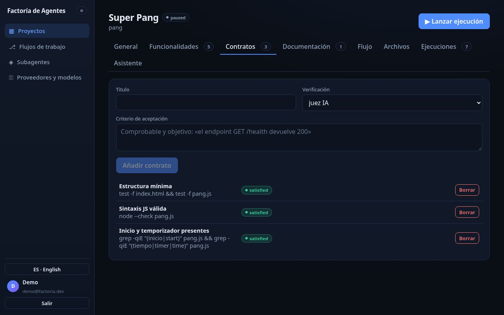
7.4 Documentación
- Añadir documento (texto): escribe Título, pega un texto y pulsa Añadir documento.
- Subir documento (PDF, XML, TXT…): pulsa ⬆ Subir documento, elige el archivo. La aplicación extrae el texto y lo añade a la base de conocimiento.
- Generar imagen (bocetos): elige Modelo de imagen, escribe un Prompt y pulsa Generar imagen.
- RAG · búsqueda: escribe y pulsa Buscar. Reindexar todo vuelve a procesar la documentación.
- Memoria de largo plazo: escribe una decisión y pulsa Recordar; luego Buscar.
indexed indica que el documento ya es buscable.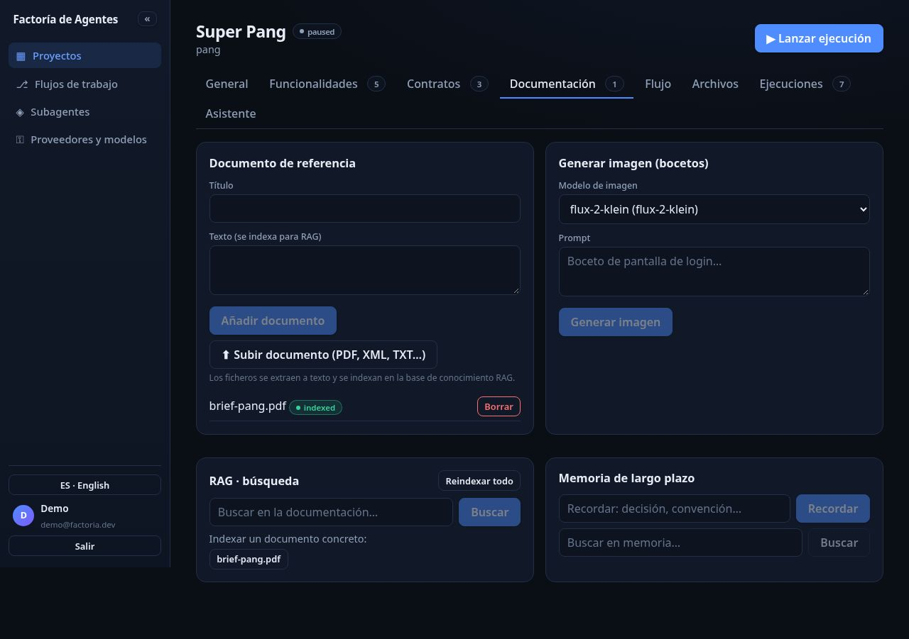
7.5 Flujo
- Los pasos no ejecutados se ven en gris.
- En ejecución en azul (resaltado), completados en verde, fallidos en rojo.
- Si un paso se repite (bucle), se pinta en naranja con una etiqueta ×N.
- Usa los controles de zoom (＋, －, encuadrar).
8. Lanzar el desarrollo y seguirlo en vivo
8.1 Lanzar
- En la cabecera del proyecto, pulsa ▶ Lanzar ejecución.
- La aplicación avisa “Ejecución lanzada” y te lleva a Ejecuciones.
8.2 Ver qué está pasando
- Observabilidad en vivo: una ventana donde van apareciendo los mensajes, en orden.
- Pausar / Reanudar / Cancelar el proceso.
- Ver trazas: árbol de actividad (qué paso, cuánto tardó, cuántos tokens gastó) y Exportar OTLP.
- Etiqueta con tokens y coste de la ejecución.
Estados: queued (en cola), running (en marcha), paused (en pausa), succeeded (terminó bien), failed (falló), cancelled (cancelado).
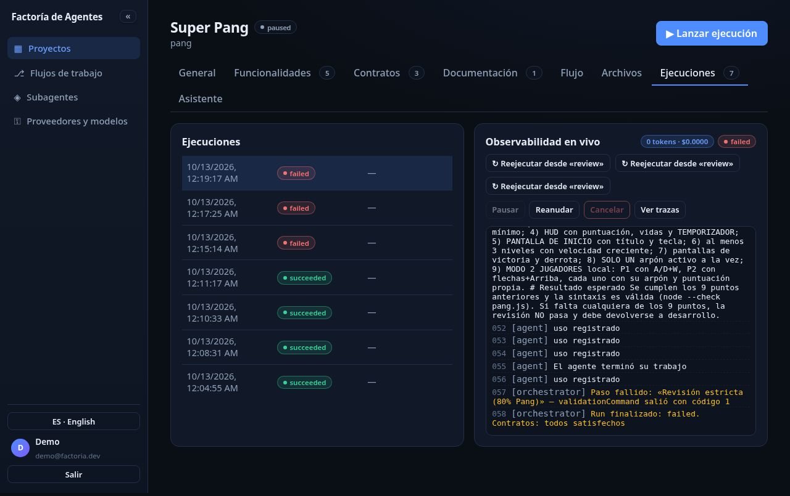
8.3 Si un paso falla
Si el flujo está preparado para corregir (bucle), se repetirá solo con indicaciones de qué arreglar. Si no, la ejecución se detiene y verás un recuadro con el motivo real (por ejemplo, un error de red o del proveedor del modelo), los pasos siguientes y los botones ↻ Reejecutar desde «paso» y Ver explicación del asistente.
8.4 Avisos y notificaciones
La campana 🔔 Notificaciones, al pie del menú lateral, reúne los avisos de tus proyectos: validación pendiente, ejecución fallida (con paso y motivo), ejecución terminada y ejecución cancelada.
- Cada aviso incluye pasos siguientes; al pulsarlo te lleva a la ejecución afectada.
- Pulsa Activar notificaciones del navegador y acepta el permiso para recibirlas aunque estés en otra pestaña.
- El asistente del proyecto deja un mensaje con la situación y los pasos siguientes.
9. Aprobar un paso (cuando el flujo lo pida)
Algunos flujos incluyen un paso de Aprobación para que decidas antes de seguir.
- Cuando el proceso llegue a ese paso, la ejecución se pausa y aparece Aprobaciones pendientes.
- Pulsa Aprobar para continuar o Rechazar para que se corrija.
- Tras aprobar, el proceso se reanuda solo.
10. Ver el código y los archivos que se generan
En la pestaña Archivos puedes explorar todo lo que los ayudantes han creado.
- Explorador (izquierda): navega por las carpetas. Usa las “migas de pan” (raíz / carpeta) para volver atrás. Refrescar muestra lo nuevo.
- Visor (derecha): haz clic en un archivo para ver su contenido. Si es muy grande, se recorta; si es binario, lo indica.
Aquí comprobarás, por ejemplo, que se han creado index.html, game.js y README.md.
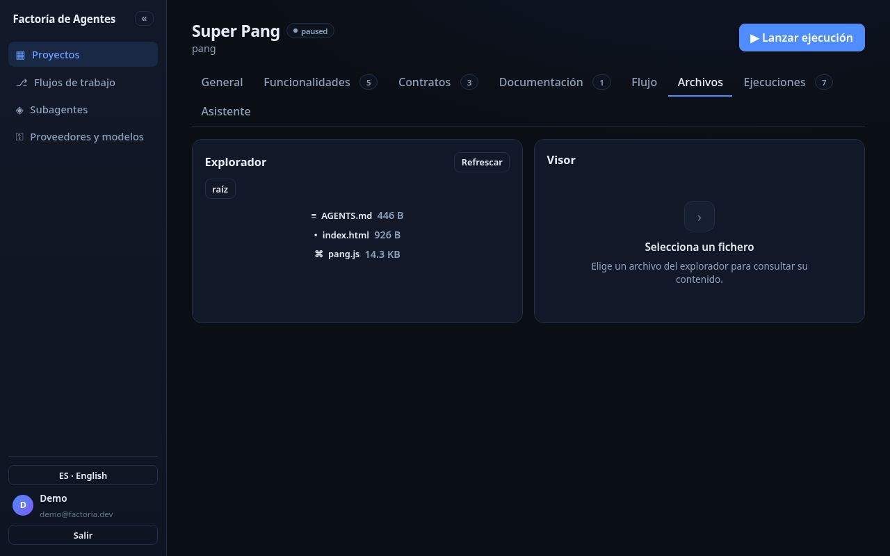
11. Consultar los costes
Los ayudantes consumen tokens que tienen un coste. En General → Presupuesto y coste:
- Consumo actual (tokens y coste acumulado).
- Límite blando y Límite duro en dólares: al superar el blando recibes un aviso; al superar el duro, las ejecuciones se pausan.
- Webhook de alertas: una dirección a la que se envían avisos. El botón Probar comprueba que funciona.
- Coste por modelo/tipo y un gráfico de los últimos 30 días.
12. Hablar con el asistente del proyecto
En la pestaña Asistente tienes un ayudante que conoce tu proyecto.
- Preguntar: escribe y pulsa Enviar.
- Propuestas: escribe “propón funcionalidades” o “propón contratos”; las propuestas aparecen en Propuestas pendientes con Aceptar / Rechazar.
- Resumen de ausencia: para saber qué ocurrió mientras no mirabas.
- Imágenes: puede generar bocetos según el modelo elegido.
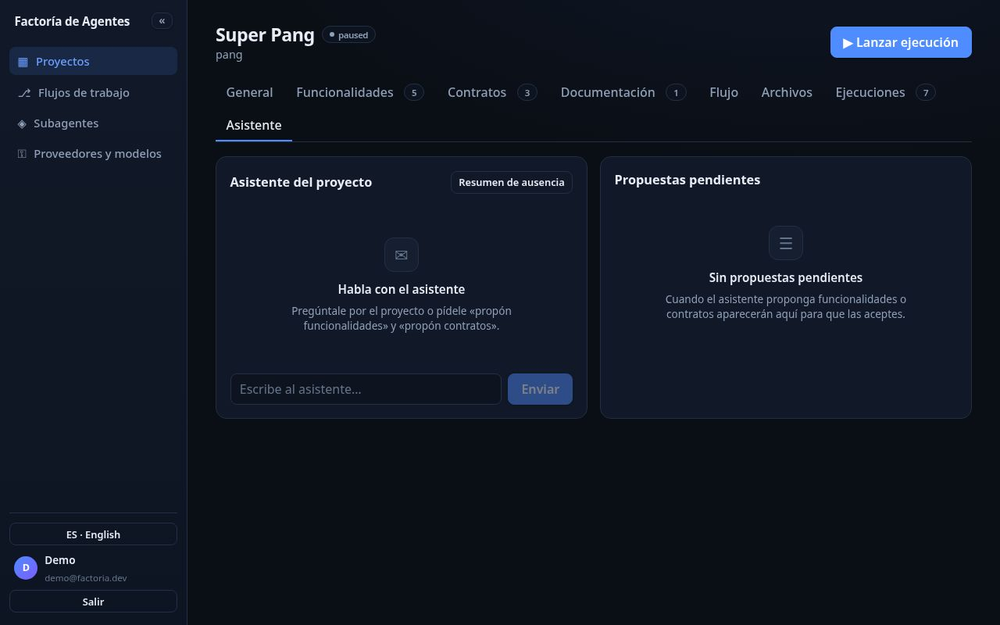
13. Recorrido completo de ejemplo
Juntemos todo: construir un juego de plataformas sencillo.
- Proveedores y modelos → añade un proveedor (nombre + API key) y un modelo con
codeyreasoning(y uno conembeddingssi subirás documentos). - Flujos de trabajo → Usar plantilla en “Bucle de revisión estricta”.
- Subagentes → Cargar plantillas y, si quieres, asigna el documentador a un paso de documentación.
- Proyectos → + Nuevo proyecto (nombre, nombre del programa, objetivo, flujo).
- Completa Funcionalidades, Contratos y Documentación (sube un PDF con tus ideas).
- Observa el diagrama en la pestaña Flujo mientras se ejecuta.
- Ejecuciones → sigue la Observabilidad en vivo y consulta Ver trazas.
- Archivos → comprueba el código generado.
- Asistente → pídele propuestas y acéptalas.
- Cuando todos los contratos estén cumplidos, el proyecto pasa a
completed.
14. Preguntas frecuentes
¿Necesito saber programar?
No. Tú describes lo que quieres y eliges el orden de las tareas.
¿Qué pasa si cierro el navegador durante un desarrollo?
Nada: sigue funcionando solo. Al volver verás en Ejecuciones todo lo ocurrido, y un Resumen de ausencia.
¿Cuánto cuesta?
Depende de los modelos que uses. En General → Presupuesto y coste ves el consumo y puedes fijar un límite.
¿Por qué el proyecto no se marca como “completado”?
Porque falta cumplir algún contrato (aparecen como pending).
¿Puedo cambiar el flujo de un proyecto?
Sí: en General cambia el Flujo de trabajo; también puedes editar el flujo desde la pestaña Flujo.
Se ha quedado un paso “fallido”, ¿qué hago?
En Ejecuciones, pulsa ↻ Reejecutar desde «paso» o Reanudar si está en pausa. Mira Ver trazas para entender qué pasó.
¿Dónde está el código que se genera?
En la pestaña Archivos. Los ficheros viven en la carpeta de trabajo del proyecto en el servidor.
¿Cómo borro un proyecto o un flujo?
En las listas de Proyectos o Flujos de trabajo, usa el botón Borrar.
15. Glosario
Agente / Ayudante de IA: programa automático que hace tareas usando inteligencia artificial.
Proveedor: empresa o servicio que presta la IA (Anthropic, OpenAI, NaN…).
Modelo: la versión concreta del ayudante (Claude Sonnet, DeepSeek…).
API key: la “llave” secreta para usar un proveedor.
Proyecto: el programa que quieres construir.
Flujo de trabajo: el plano con el orden de las tareas.
Tarea (paso / nodo): una casilla del flujo que hace un trabajo.
Subagente: ayudante especializado (revisor, documentador, escritor de tests…).
Contrato: criterio de aceptación que debe cumplirse para terminar el proyecto.
Objetivo: la finalidad del proyecto, en tus palabras.
Stack: conjunto de tecnologías con las que se construye el programa.
Ejecución (run): una “puesta en marcha” del flujo sobre el proyecto.
Aprobación: paso que espera tu permiso para continuar.
Bucle de revisión: repetir un paso (o volver atrás) hasta que quede bien.
RAG: búsqueda inteligente dentro de tus documentos.
Embeddings / Rerank: modelos que permiten esa búsqueda inteligente.
Token: unidad de uso de la IA; determina el coste.
Presupuesto (límite blando/duro): aviso al acercarte y pausa al superar el gasto.
Webhook: dirección a la que se envían avisos automáticos.
Traza: registro detallado de lo que hizo cada paso (tiempo, tokens, coste).
OTLP: formato estándar para llevar trazas a otras herramientas.
Workspace: la carpeta del servidor donde se guardan los archivos del programa.
draft / completed / paused / failed: estados del proyecto (borrador, completado, en pausa, fallido).